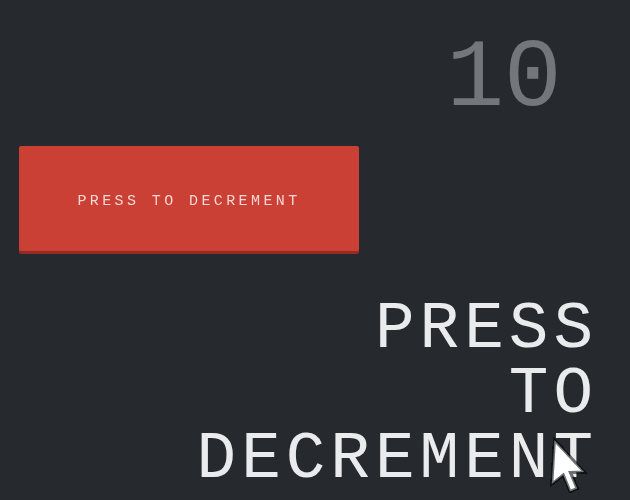
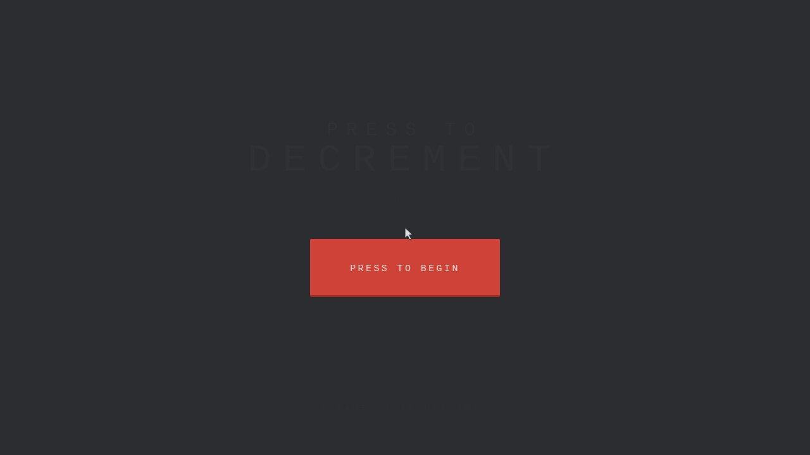
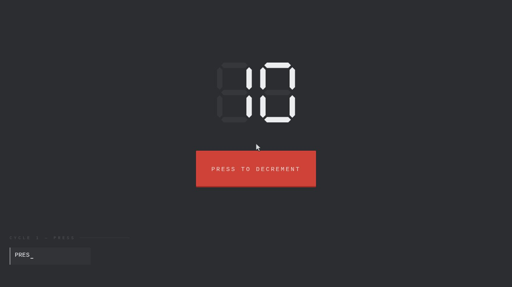
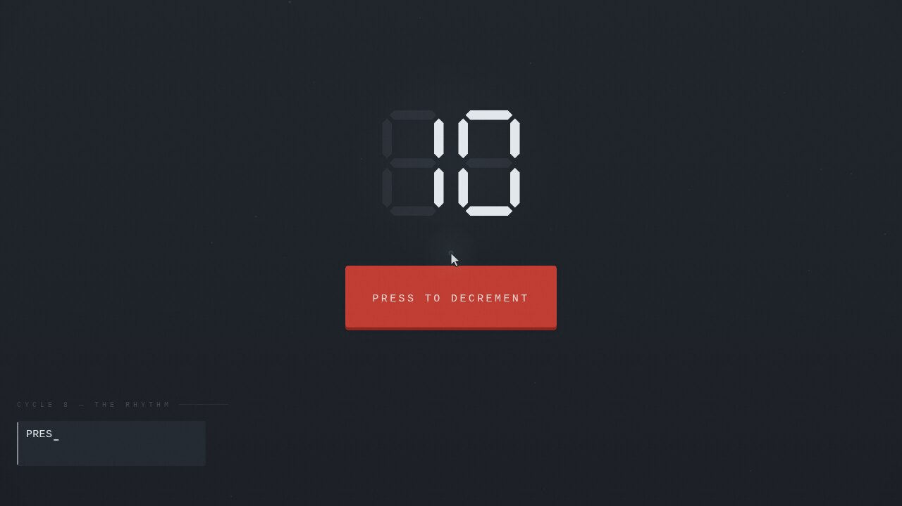
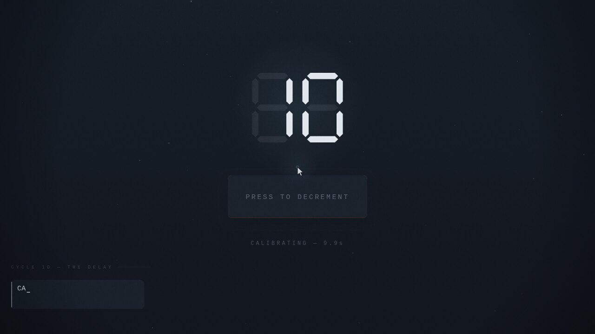
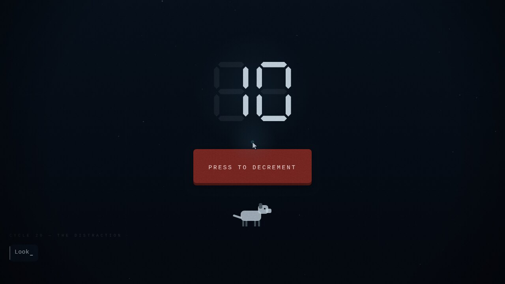
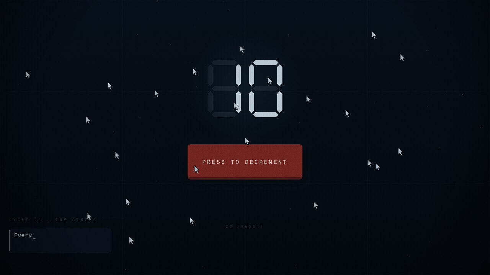

PRESS TO DECREMENT
Game jam · Interactive fictionThere is a button, and a number, and the number is ten.

My entry for the 96-hour GMTK Game Jam 2026, theme COUNT DOWN. Life took most of that window, so the whole thing was built in roughly 24 hours of actual work. It placed 50th of 10,600 entries for Creativity — top 0.5% — and 172nd for Narrative. My first finished game.
Results
Final placement across all five judged criteria, from 29 ratings. With one day of work behind it I was hoping to land somewhere near 1000th — top 10% — which would already have been a result I was happy with. Four of the five columns came in ahead of that.
| Criteria | Rank | Percentile | Score |
|---|---|---|---|
| Creativity | #50 | Top 0.5% | 4.552 |
| Narrative | #172 | Top 1.6% | 4.138 |
| Enjoyment | #531 | Top 5% | 3.966 |
| Artwork | #1486 | Top 14% | 3.862 |
| Audio | #2933 | Top 28% | 3.103 |
Scores are adjusted by itch.io from the raw score using the median number of ratings per game in the jam. Audio is the weakest column and I agree with it — every sound is synthesized at runtime, and with only a day to build I never got past the first pass on it.
Screens
The same three objects the whole way through — a number, a button, and a cursor. Everything that changes between these shots is the room waking up around them.






The idea
The countdown is the antagonist. Every press takes one off the number, and reaching zero is not a win — it closes a cycle, rebuilds the button slightly worse than it was, and starts again at ten. Zero is what causes the loop.
Which means the button is a machine that gets ground down every time you do what it asks. Over twenty-four cycles it works that out, and the game becomes a question about whether you keep pressing once you know.
Three ladders
Everything in the game climbs one of three ladders in lockstep. If an idea couldn't be placed on one of them, it didn't go in. That rule is most of why a jam game with this much text stays coherent.
- The typography is the character arc. All caps is a machine with no first person. Sentence case is a person emerging. Lowercase only happens when it has nothing left to defend. Three deliberate lowercase leaks land early, inside otherwise total tedium, and they do more than any effect in the game.
- The room wakes up rather than the player sinking. A single
depthvalue runs 0 → 1 across the whole game and drives palette, respiration, current and audio together. - Three registers of text that never blur. Speech gets a bubble and types out. System text gets no bubble and prints instantly, because CYCLE COMPLETE is the loop closing, not something anyone says to you. Giving it a speech bubble put it in the same voice as the button's confessions and flattened both.
Your body
You start as a cursor: an input device, as much a machine as the button is. The moment the button treats you as someone, you become one. The pointer gains weight, then mass and momentum, then a soft light — and when the button walls you off, pointing stops being enough and WASD is born mid-game. For the finale you are handed a plain arrow again. You are an operator, until you refuse.
The dog
Cycle 20 is the one people remember, and it is the only cycle in the game that never blocks you. The button works perfectly. Nothing is refused, nothing is timed, nothing warns you. A dog walks into the room and starts making its way toward you, forever — you cannot wait it out and you cannot send it home.
Standing near it counts up, and the closer you stand the faster it climbs. So the honest reading of the cycle is a chore: lead the dog away, sprint back, bank a few presses, repeat. That is the trap. The cycle is not testing whether you can beat an obstacle, it is testing what you do when there is no obstacle at all.
What makes it work is that the button spends the whole cycle telling you to go to the dog, and every word of it is true. It came on its own. I didn't ask it to. It likes you. The button isn't going anywhere. Nobody's timing you. I'd go over, if I could go anywhere. There is no lie to catch it in. It is the kindest the game ever gets, and it is a weapon — it knows the player wants permission, so it hands the permission over and lets you spend your own time.
Stand there long enough and it stops working the angle entirely. At ninety-nine pets it says ninety-nine, and you spent every one of them on a dog. It isn't real. You know that. I made it out of the same rectangles as me. It was still worth it. Every ending is reached the same way: not by choosing an option, but by being caught doing something. The dog is the gentlest version of that, and it is the reason the harsher ones land.
The architecture
Plain HTML, CSS and native ES modules. No engine, no build step, and no asset files at all — everything is drawn to one canvas and every sound is synthesized at runtime. Three rules hold it together:
- The kernel knows nothing about any cycle. It owns the count and the zero-to-reset loop, and a cycle calls
decrement()only for a press that that cycle considers valid. All the difficulty lives in the cycles, none in the kernel. A cycle with no build step falls back to a plain ten-press round using its real dialogue, so the game is always playable end to end and an unfinished cycle degrades instead of breaking. - The display may lie. The voice may not. Screen output runs through an optional lie policy; the button's speech always reports the truth. That seam is load-bearing, because the ending only works if you have learned to trust the voice over the interface.
- One value gates every effect. Gradients, glow, grain, vignette, motes and bevel all multiply by the same atmosphere term. Anything that ignored it would leak the ending's mood into the opening and flatten the whole arc.
The game is an ordered array of cycle modules, so cutting or reordering the game is editing a list.
Three endings
You never pick one off a list. Each ending is just the shape of what you did with the last ten seconds. Two of them drop you back at the title with nothing kept, because that is what those endings are; only one stops.
Every ending reports your total time in the room — a clock that has run across every session since your very first press, persisted with everything else, and never once mentioned until then. Each one also closes by telling you how many of the three you have found, so no exit is a dead end, but the menu only admits there are others once you have reached one.
What players said
Twenty-five comments on the jam page, from 29 ratings. These are the ones that changed how I think about the game.
“I loved the narrative and the visuals subtly shifting, you don't even notice how much it has changed until the end.” cdougii
“I followed instructions. But at what cost. I pet the dog though.” NemoPearwall
“The narrator reminded me of a mix between GLaDOS and the guy from Clickholding. The art style was clean and simple, but the complexity of clicking the button after each round was a fun surprise.” IrishGh0st91
“I was shocked to find out all this was made without an engine, only HTML and CSS.” Draguarys Dev
“I struggled with the early cycles because there wasn't much of interest to hold onto, but by the time I got to the dog and the mouse with momentum I started to get curious about where this was going.” qrparker
“Hit the theme the best from the 10 games I played, but was annoyed when it came to hovering the button and waiting for what felt like 10 seconds.” Ninjin42
What I would change
The scores and the comments agree with each other, which makes the post-mortem easy to write.
- Let people skip ahead on a replay. This is the real mistake. There are three endings and no way to reach a later cycle directly, so wanting to see a second one means sitting through the entire game again — including the slow cycles. At least one player told me they were curious and still didn't do it. That is a design failure, not a content problem, and a cycle-select after your first ending is the first thing I would build.
- Cut the slow cycles, or shorten them hard. The delay cycle makes the button go dead for ten seconds while it talks. If you are reading, it works. If you are playing, it is a pause with nothing in it. It only ever had one job — force the text to be read instead of skipped — and there are cheaper ways to buy that.
- Fix the reset key. Pressing
Rwipes your progress with no confirmation, which a player hit by accident. That one is just a bug in disguise. - Audio deserved a second pass. #2933 is the weakest column by a wide margin and it is fair. Every sound is synthesized at runtime, which was the right call for a no-asset build, but I stopped at the first version that worked.
- Front-load one hook. The early cycles are deliberately tedious so the shift has something to shift from, but several people nearly stopped before the dog. The arc needs one earlier moment that promises the game is going somewhere.
What I would not change is the structure. Keeping the kernel ignorant of the cycles is why a game written in a day is coherent at all, and it is the part I would reuse tomorrow.
Built with
JavaScript with native ES modules, a canvas renderer with its own draw and layout primitives, canvas-drawn and hit-tested widgets, Web Audio for every sound, and localStorage persistence that lets the button notice you left and came back. No framework, no engine, no images.